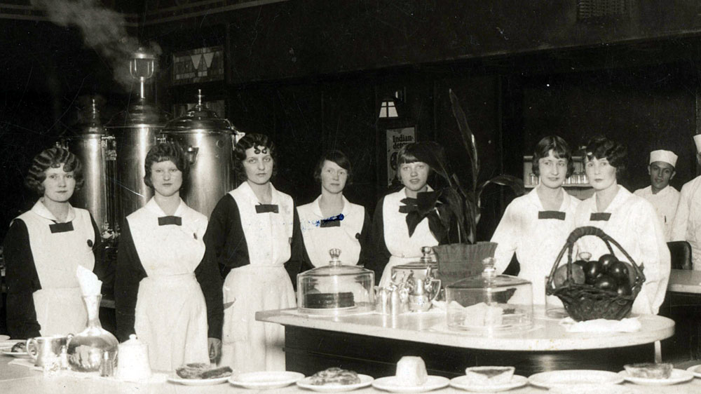
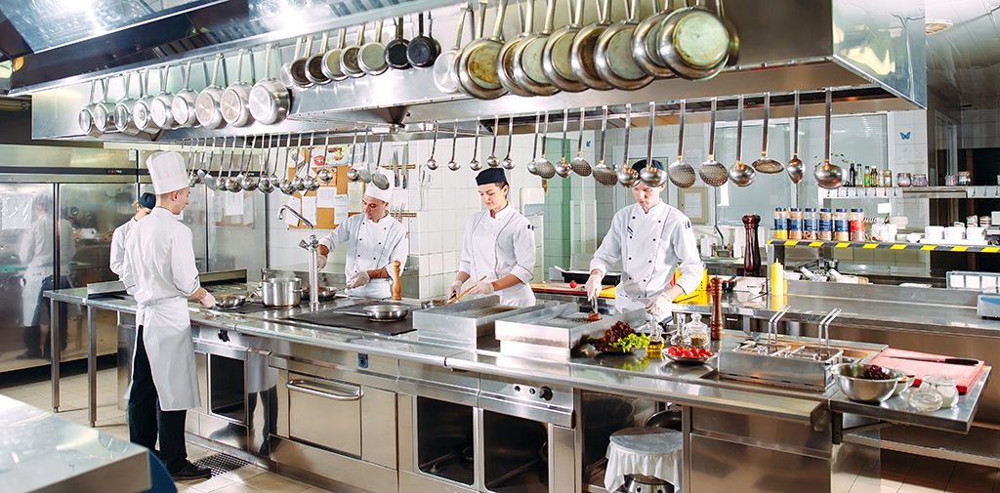

Moscoso Cake - Uma História de Sucesso
O Começo de Tudo
Maria sempre foi apaixonada por culinária, e desde pequena gostava de experimentar receitas com a avó. Porém, sua paixão por bolos começou de forma simples: um dia, sem querer, ela fez o bolo mais delicioso de sua vida. No início, ela começou a preparar os bolos para amigos e familiares, e logo se percebeu que estava criando algo único. Sua cozinha se transformou em uma verdadeira fábrica de bolos caseiros, onde ela testava novas receitas e aperfeiçoava suas técnicas.
O Crescimento e o Sucesso
Depois de meses de dedicação, Maria decidiu que era hora de levar seus bolos a um público maior. Com o apoio da família e amigos, ela abriu sua primeira loja em Lisboa. Os bolos caseiros rapidamente se tornaram um sucesso, e a clientela foi crescendo a cada dia. A qualidade e o carinho colocados em cada receita conquistaram o coração dos lisboetas.
Com o sucesso em Lisboa, Maria não demorou a expandir seus negócios e abriu uma segunda loja no Porto. A partir daí, suas lojas se tornaram referência em qualidade e sabor em todo o país. A empresa "Moscoso Cake" hoje é reconhecida em todo Portugal, oferecendo bolos fresquinhos e deliciosos, feitos com ingredientes locais e muito amor.
O Futuro Brilhante
O futuro de "Mocoso Cake" é promissor. Maria continua inovando com novas receitas e trabalhando para expandir suas lojas, mas sem perder a essência de sua cozinha caseira. Com a mesma paixão e dedicação de quando começou, ela sabe que o segredo do sucesso está na qualidade e na conexão com seus clientes.
Página Inicial